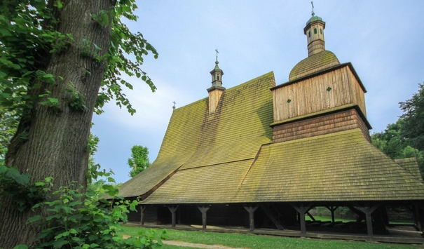

DREWNIANE KOŚCIOŁY POŁUDNIOWEJ MAŁOPOLSKI
BINAROWA, BLIZNE, DĘBNO, HACZÓW, LIPNICA MUROWANA, SĘKOWA

Drewniane kościoły południowej Małopolski stanowią wyjątkowy przykład różnych aspektów tradycji budowlanych kościołów średniowiecznych w kulturze rzymsko-katolickiej. Do ich budowy wykorzystano technikę zrębową, rozpowszechnioną w Europie Północnej i Wschodniej od średniowiecza. Kościoły powstawały z fundacji rodzin szlacheckich i były symbolem prestiżu. Stanowiły interesującą alternatywę dla budowli murowanych, powstających w miastach.